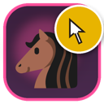

CEDRO
Converti i file sul tuo PC, senza caricarli online. Tutto a portata di clic.
Strumenti pratici, automazioni e qualche idea quasi sensata. Un solo posto per scoprire tutti i miei progetti.
Siti, applicazioni e strumenti.
Converti i file sul tuo PC, senza caricarli online. Tutto a portata di clic.
Il telefono del centralino Alcatel-Lucent OXO sul computer: chiami, rispondi, metti in attesa e passi le chiamate.
Statistica scientifica, analisi e figure per Windows. Un progetto indipendente in beta.
Ricerca locale dei documenti, OCR offline e verbali PDF in un’app portatile.

Registra e ripeti le azioni del mouse su Windows e Linux, senza installazione.
Richieste guidate, conversazioni e FAQ: un portale open source per GLPI.
Resoconti del lavoro agile per enti pubblici, revisione e PDF sigillati.
Strumenti OSINT nel browser, con un’interfaccia hacker-punk.
Dal laboratorio.
Un copilota AI per Steam Deck, con assistenza contestuale e voce.
Launcher esterno e strumenti per usare su Linux l’app Windows installata separatamente.
Il progetto dedicato al mondo dei cavalli e alla gestione del proprio maneggio.